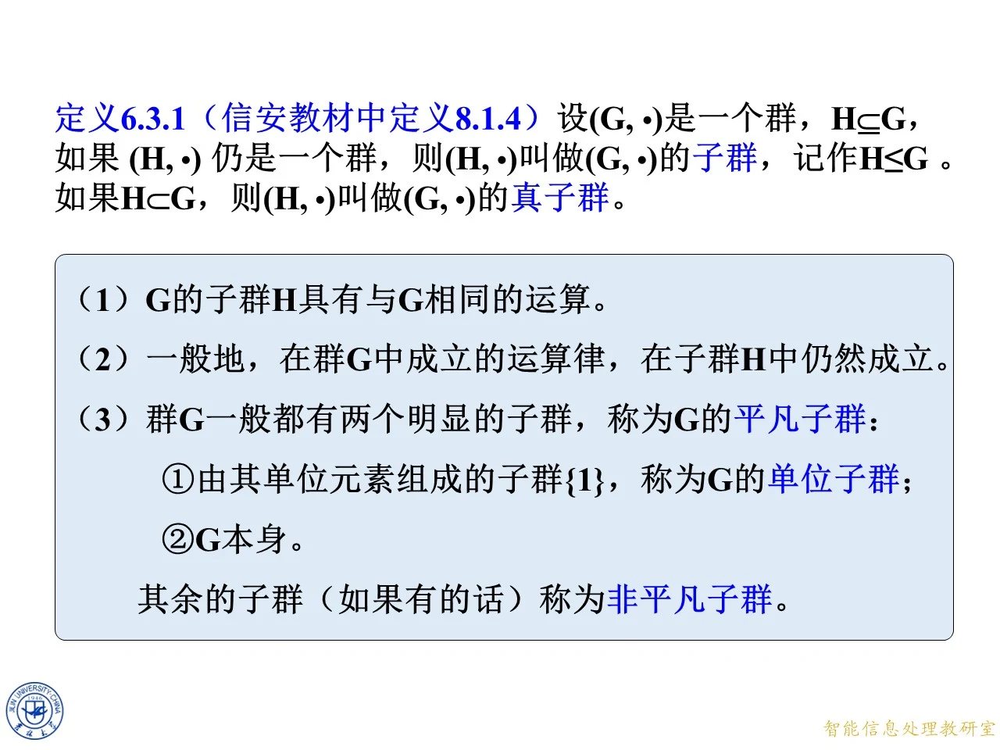
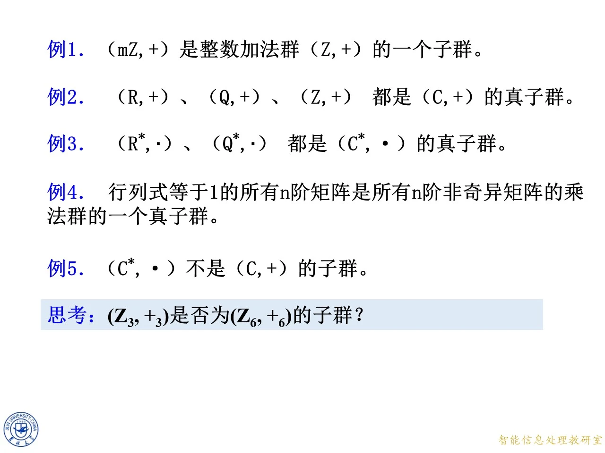
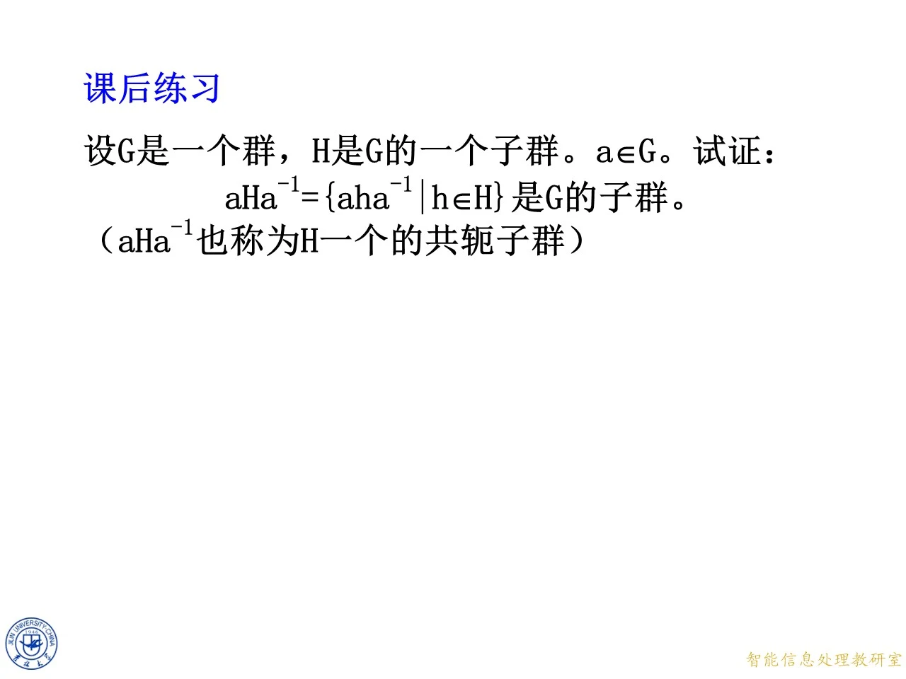

本课进入第八章群、环、域的核心：在已知一个群的前提下，研究它的子集何时仍构成群——这就是子群的概念。子群是后继所有内容（循环群、陪集、拉格朗日定理、正规子群）的基础。本课先给出子群、真子群、平凡子群的定义（定义 6.3.1，即信安教材中的定义 8.1.4），通过一批正反实例（例 1 至例 5、例 6）熟悉判定，再完成一个完整的子群证明（例 7，中心化子），最后以共轭子群练习（课后练习）与子半群例子（例 8）收尾。
定义 6.3.1：子群、真子群与平凡子群
◆ p.1 ｜章封面
p.1 为第八章「群、环、域」的章封面过渡页（吉林大学董旭初），无实质内容，并入下一页块。
◆ p.2-6 ｜定义 6.3.1（信安教材中定义 8.1.4）
定义 6.3.1：设 ( G , ⋅ ) (G,\cdot) ( G , ⋅ ) H ⊆ G H\subseteq G H ⊆ G ( H , ⋅ ) (H,\cdot) ( H , ⋅ ) ( H , ⋅ ) (H,\cdot) ( H , ⋅ ) ( G , ⋅ ) (G,\cdot) ( G , ⋅ ) 子群 ，记作 H ≤ G H\leq G H ≤ G H ⊂ G H\subset G H ⊂ G ( H , ⋅ ) (H,\cdot) ( H , ⋅ ) ( G , ⋅ ) (G,\cdot) ( G , ⋅ ) 真子群 。
课件随后给出三条注释，每条都有讲究：
G G G H H H G G G ⋅ \cdot ⋅ H H H 一般地，在群 G G G H H H 。比如结合律、消去律：对 ∀ a , b , c ∈ G \forall a,b,c\in G ∀ a , b , c ∈ G ( a ⋅ b ) ⋅ c = a ⋅ ( b ⋅ c ) (a\cdot b)\cdot c=a\cdot(b\cdot c) ( a ⋅ b ) ⋅ c = a ⋅ ( b ⋅ c ) H H H H H H G G G 群 G G G G G G ：其一是由单位元素组成的子群 { 1 } \{1\} { 1 } G G G G G G 非平凡子群 。
拓展 （课件外补充）：注意"平凡"与"真"是两个独立的标准。平凡子群回答"是不是那两个必然存在的 { 1 } \{1\} { 1 } G G G G G G { 1 } \{1\} { 1 } G G G H ≠ G H\neq G H = G G G G H H H

课件原图 · 第八章-4-原版（合并来源第 9 页 / 本份第 9 页） · 第 9 页 查看前后已收录原页 → 例 1 至例 5：一批子群的正例与反例
◆ p.7-9 ｜定义的补充与平凡子群
这几页是定义 6.3.1 注释的动画展开帧（逐条显示前面三条注释），内容与 p.2-6 页块重合，并入上一页块讲解。
◆ p.10 ｜多选题
以下说法哪些正确（m Z = { m k ∣ k ∈ Z } m\mathbb{Z}=\{mk\mid k\in\mathbb{Z}\} m Z = { mk ∣ k ∈ Z }
A：( m Z , + ) (m\mathbb{Z},+) ( m Z , + ) ( Z , + ) (\mathbb{Z},+) ( Z , + ) 正确 。m Z m\mathbb{Z} m Z 0 0 0 m k + m ℓ = m ( k + ℓ ) mk+m\ell=m(k+\ell) mk + m ℓ = m ( k + ℓ ) − m k = m ( − k ) -mk=m(-k) − mk = m ( − k ) 0 ∈ m Z 0\in m\mathbb{Z} 0 ∈ m Z m k + m ℓ = m ( k + ℓ ) mk+m\ell=m(k+\ell) mk + m ℓ = m ( k + ℓ )
B：( { 0 , 1 , 2 , 3 , 4 , 5 , 6 } , + ) (\{0,1,2,3,4,5,6\},+) ({ 0 , 1 , 2 , 3 , 4 , 5 , 6 } , + ) ( Z , + ) (\mathbb{Z},+) ( Z , + ) 错误 。这里的 + + + 6 + 6 = 12 ∉ { 0 , … , 6 } 6+6=12\notin\{0,\ldots,6\} 6 + 6 = 12 ∈ / { 0 , … , 6 } ( Z , + ) (\mathbb{Z},+) ( Z , + )
C：( R , + ) (\mathbb{R},+) ( R , + ) ( Q , + ) (\mathbb{Q},+) ( Q , + ) ( Z , + ) (\mathbb{Z},+) ( Z , + ) ( C , + ) (\mathbb{C},+) ( C , + ) 正确 。三者都含 0、对加法与负数封闭，都是 C \mathbb{C} C i ∈ C \mathrm{i}\in\mathbb{C} i ∈ C
D：( R ∗ , ⋅ ) (\mathbb{R}^{*},\cdot) ( R ∗ , ⋅ ) ( Q ∗ , ⋅ ) (\mathbb{Q}^{*},\cdot) ( Q ∗ , ⋅ ) ( C ∗ , ⋅ ) (\mathbb{C}^{*},\cdot) ( C ∗ , ⋅ ) 正确 。C ∗ \mathbb{C}^{*} C ∗ 1 1 1 z z z z − 1 z^{-1} z − 1 R ∗ , Q ∗ \mathbb{R}^{*},\mathbb{Q}^{*} R ∗ , Q ∗ i ∈ C ∗ \mathrm{i}\in\mathbb{C}^{*} i ∈ C ∗
E：( C ∗ , ⋅ ) (\mathbb{C}^{*},\cdot) ( C ∗ , ⋅ ) ( C , + ) (\mathbb{C},+) ( C , + ) 错误 。子群必须沿用同一运算，而这里是乘法对加法，运算不同，直接违反注释（1）。
F：行列式等于 1 的所有 n n n n n n 正确 。含单位矩阵（行列式 1）；det ( A B ) = det A det B = 1 \det(AB)=\det A\,\det B=1 det ( A B ) = det A det B = 1 det ( A − 1 ) = ( det A ) − 1 = 1 \det(A^{-1})=(\det A)^{-1}=1 det ( A − 1 ) = ( det A ) − 1 = 1 d i a g ( 2 , 1 , … , 1 ) \mathrm{diag}(2,1,\ldots,1) diag ( 2 , 1 , … , 1 ) 2 × 1 − 0 × 0 = 2 2\times1-0\times0=2 2 × 1 − 0 × 0 = 2
拓展 （课件外补充）：这道多选题的正确答案是 A、C、D、F。B 和 E 是两类最经典的陷阱：B 错在运算不封闭（集合恰好是模 7 剩余系容易诱导你换成模 7 加法，但那是另一个群 ( Z 7 , + 7 ) (\mathbb{Z}_7,+_7) ( Z 7 , + 7 ) ( Z , + ) (\mathbb{Z},+) ( Z , + )
◆ p.11-17 ｜例 1 至例 5 与思考题
这七页是五个例子的动画逐条展示，最后附加一道思考题。
例 1：( m Z , + ) (m\mathbb{Z},+) ( m Z , + ) ( Z , + ) (\mathbb{Z},+) ( Z , + ) m Z m\mathbb{Z} m Z m k + m ℓ = m ( k + ℓ ) mk+m\ell=m(k+\ell) mk + m ℓ = m ( k + ℓ ) 0 0 0 m k mk mk m ( − k ) m(-k) m ( − k ) ( Z , + ) (\mathbb{Z},+) ( Z , + )
例 2：( R , + ) (\mathbb{R},+) ( R , + ) ( Q , + ) (\mathbb{Q},+) ( Q , + ) ( Z , + ) (\mathbb{Z},+) ( Z , + ) ( C , + ) (\mathbb{C},+) ( C , + ) i \mathrm{i} i
例 3：( R ∗ , ⋅ ) (\mathbb{R}^{*},\cdot) ( R ∗ , ⋅ ) ( Q ∗ , ⋅ ) (\mathbb{Q}^{*},\cdot) ( Q ∗ , ⋅ ) ( C ∗ , ⋅ ) (\mathbb{C}^{*},\cdot) ( C ∗ , ⋅ )
例 4：行列式等于 1 的所有 n n n n n n det ( A B ) = det A det B \det(AB)=\det A\det B det ( A B ) = det A det B det ( A − 1 ) = 1 / det A = 1 \det(A^{-1})=1/\det A=1 det ( A − 1 ) = 1/ det A = 1 d i a g ( 2 , 1 , … , 1 ) \mathrm{diag}(2,1,\ldots,1) diag ( 2 , 1 , … , 1 )
例 5：( C ∗ , ⋅ ) (\mathbb{C}^{*},\cdot) ( C ∗ , ⋅ ) 不是 ( C , + ) (\mathbb{C},+) ( C , + ) ( C ∗ , ⋅ ) (\mathbb{C}^{*},\cdot) ( C ∗ , ⋅ ) ( C , + ) (\mathbb{C},+) ( C , + )
思考题：( Z 3 , + 3 ) (\mathbb{Z}_3,+_3) ( Z 3 , + 3 ) ( Z 6 , + 6 ) (\mathbb{Z}_6,+_6) ( Z 6 , + 6 )
解答：不是 。( Z 3 , + 3 ) (\mathbb{Z}_3,+_3) ( Z 3 , + 3 ) ( Z 6 , + 6 ) (\mathbb{Z}_6,+_6) ( Z 6 , + 6 ) Z 3 \mathbb{Z}_3 Z 3 { 0 , 1 , 2 } \{0,1,2\} { 0 , 1 , 2 } Z 6 \mathbb{Z}_6 Z 6 + 6 +_6 + 6 2 + 6 2 = 4 ∉ { 0 , 1 , 2 } 2+_6\,2=4\notin\{0,1,2\} 2 + 6 2 = 4 ∈ / { 0 , 1 , 2 } ( 2 + 2 ) m o d 6 = 4 (2+2)\bmod 6=4 ( 2 + 2 ) mod 6 = 4 ( Z 3 , + 3 ) (\mathbb{Z}_3,+_3) ( Z 3 , + 3 ) 2 + 3 2 = 1 2+_3\,2=1 2 + 3 2 = 1 { 0 , 2 , 4 } \{0,2,4\} { 0 , 2 , 4 } ( Z 6 , + 6 ) (\mathbb{Z}_6,+_6) ( Z 6 , + 6 ) ( Z 3 , + 3 ) (\mathbb{Z}_3,+_3) ( Z 3 , + 3 )
拓展 （课件外补充）：例 1 至例 5 加思考题构成一条清晰的判断链：先看集合是否是子集，再看运算是否同一个，再验证封闭、单位元、逆元，最后若要"真"，举一个不在 H H H

课件原图 · 第八章-4-原版（合并来源第 17 页 / 本份第 17 页） · 第 17 页 查看前后已收录原页 → 例 6 与填空题：Z 6 \mathbb{Z}_6 Z 6
◆ p.18 ｜填空题
设 Z 6 = { 0 , 1 , 2 , 3 , 4 , 5 } \mathbb{Z}_6=\{0,1,2,3,4,5\} Z 6 = { 0 , 1 , 2 , 3 , 4 , 5 } Z 6 \mathbb{Z}_6 Z 6 + 6 +_6 + 6
解答：先枚举全部子群。含单位元 0 0 0 + 6 +_6 + 6 { 0 } \{0\} { 0 } { 0 , 3 } \{0,3\} { 0 , 3 } { 0 , 2 , 4 } \{0,2,4\} { 0 , 2 , 4 } Z 6 \mathbb{Z}_6 Z 6 4 个子群；真子群要排除全群 Z 6 \mathbb{Z}_6 Z 6 3 个（{ 0 } \{0\} { 0 } { 0 , 3 } \{0,3\} { 0 , 3 } { 0 , 2 , 4 } \{0,2,4\} { 0 , 2 , 4 } { 0 } \{0\} { 0 } { 0 } \{0\} { 0 } Z 6 \mathbb{Z}_6 Z 6 2 个。
◆ p.19-23 ｜例 6
例 6 正面回答了填空题背后的验证细节。设 Z 6 = { 0 , 1 , 2 , 3 , 4 , 5 } \mathbb{Z}_6=\{0,1,2,3,4,5\} Z 6 = { 0 , 1 , 2 , 3 , 4 , 5 }
{ 0 } \{0\} { 0 } Z 6 \mathbb{Z}_6 Z 6 平凡子群 。{ 0 } \{0\} { 0 } Z 6 \mathbb{Z}_6 Z 6 { 0 , 3 } \{0,3\} { 0 , 3 } { 0 , 2 , 4 } \{0,2,4\} { 0 , 2 , 4 } Z 6 \mathbb{Z}_6 Z 6 非平凡子群 。验证 { 0 , 3 } \{0,3\} { 0 , 3 } 0 + 6 3 = 3 0+_6 3=3 0 + 6 3 = 3 3 + 6 3 = 0 3+_6 3=0 3 + 6 3 = 0 3 3 3 { 0 , 2 , 4 } \{0,2,4\} { 0 , 2 , 4 } 2 + 2 = 4 2+2=4 2 + 2 = 4 2 + 4 = 0 2+4=0 2 + 4 = 0 4 + 4 = 2 4+4=2 4 + 4 = 2 2 2 2 4 4 4 { 0 } \{0\} { 0 } Z 6 \mathbb{Z}_6 Z 6 { 0 , 1 , 3 , 5 } \{0,1,3,5\} { 0 , 1 , 3 , 5 } 不是 Z 6 \mathbb{Z}_6 Z 6 1 + 6 1 = 2 ∉ { 0 , 1 , 3 , 5 } 1+_6 1=2\notin\{0,1,3,5\} 1 + 6 1 = 2 ∈ / { 0 , 1 , 3 , 5 } ( 1 + 1 ) m o d 6 = 2 (1+1)\bmod 6=2 ( 1 + 1 ) mod 6 = 2
课件还配了一张某的子群包含关系示意图：大圈是 ( Z 6 , + 6 ) (\mathbb{Z}_6,+_6) ( Z 6 , + 6 ) { 0 , 3 } \{0,3\} { 0 , 3 } { 0 , 2 , 4 } \{0,2,4\} { 0 , 2 , 4 }
拓展 （课件外补充）：为什么恰好是这四个？线索是"元素的阶"。0 0 0 3 + 6 3 = 0 3+_6 3=0 3 + 6 3 = 0 3 3 3 { 0 , 3 } \{0,3\} { 0 , 3 } 2 , 4 2,4 2 , 4 { 0 , 2 , 4 } \{0,2,4\} { 0 , 2 , 4 } 1 , 5 1,5 1 , 5
例 7：中心化子是子群
◆ p.24-26 ｜例 7 题目
例 7：设 ( G , ∗ ) (G,*) ( G , ∗ ) G G G a a a
H = { x ∣ x ∗ a = a ∗ x , x ∈ G } , H=\{x\mid x*a=a*x,\ x\in G\}, H = { x ∣ x ∗ a = a ∗ x , x ∈ G } ,
试证明 ( H , ∗ ) (H,*) ( H , ∗ ) ( G , ∗ ) (G,*) ( G , ∗ )
课件强调两点：条件 x ∗ a = a ∗ x x*a=a*x x ∗ a = a ∗ x 类似于交换律，但不是交换律 ——交换律要求所有元素两两可交换，这里只要求与固定的这一个 a a a H H H 与 a a a 组成的集合。这个集合就是 a a a G G G
◆ p.27-37 ｜例 7 的证明（逐步展开）
证明分四步，逐行核对。
① H H H 1 ∈ H 1\in H 1 ∈ H 1 ∗ a = a = a ∗ 1 1*a=a=a*1 1 ∗ a = a = a ∗ 1 1 1 1 H H H H H H
② H H H ∗ * ∗ x , y ∈ H x,y\in H x , y ∈ H
x ∗ a = a ∗ x , y ∗ a = a ∗ y . x*a=a*x,\qquad y*a=a*y. x ∗ a = a ∗ x , y ∗ a = a ∗ y .
于是
( x ∗ y ) ∗ a = x ∗ ( y ∗ a ) = x ∗ ( a ∗ y ) = ( x ∗ a ) ∗ y = ( a ∗ x ) ∗ y = a ∗ ( x ∗ y ) . (x*y)*a=x*(y*a)=x*(a*y)=(x*a)*y=(a*x)*y=a*(x*y). ( x ∗ y ) ∗ a = x ∗ ( y ∗ a ) = x ∗ ( a ∗ y ) = ( x ∗ a ) ∗ y = ( a ∗ x ) ∗ y = a ∗ ( x ∗ y ) .
逐步理由：第一个等号是结合律；第二个等号把 y ∗ a y*a y ∗ a a ∗ y a*y a ∗ y y ∈ H y\in H y ∈ H x ∗ a x*a x ∗ a a ∗ x a*x a ∗ x x ∈ H x\in H x ∈ H ( x ∗ y ) ∗ a = a ∗ ( x ∗ y ) (x*y)*a=a*(x*y) ( x ∗ y ) ∗ a = a ∗ ( x ∗ y ) x ∗ y x*y x ∗ y a a a x ∗ y ∈ H x*y\in H x ∗ y ∈ H H H H ∗ * ∗
③ ∗ * ∗ H H H H ⊆ G H\subseteq G H ⊆ G G G G H H H
④ H H H H H H x ∈ H x\in H x ∈ H x ∗ a = a ∗ x x*a=a*x x ∗ a = a ∗ x x − 1 x^{-1} x − 1 x − 1 x^{-1} x − 1
x − 1 ∗ ( x ∗ a ) ∗ x − 1 = x − 1 ∗ ( a ∗ x ) ∗ x − 1 . x^{-1}*(x*a)*x^{-1}=x^{-1}*(a*x)*x^{-1}. x − 1 ∗ ( x ∗ a ) ∗ x − 1 = x − 1 ∗ ( a ∗ x ) ∗ x − 1 .
左边用结合律化简：( x − 1 ∗ x ) ∗ a ∗ x − 1 = 1 ∗ a ∗ x − 1 = a ∗ x − 1 (x^{-1}*x)*a*x^{-1}=1*a*x^{-1}=a*x^{-1} ( x − 1 ∗ x ) ∗ a ∗ x − 1 = 1 ∗ a ∗ x − 1 = a ∗ x − 1 x − 1 ∗ a ∗ ( x ∗ x − 1 ) = x − 1 ∗ a ∗ 1 = x − 1 ∗ a x^{-1}*a*(x*x^{-1})=x^{-1}*a*1=x^{-1}*a x − 1 ∗ a ∗ ( x ∗ x − 1 ) = x − 1 ∗ a ∗ 1 = x − 1 ∗ a
a ∗ x − 1 = x − 1 ∗ a , a*x^{-1}=x^{-1}*a, a ∗ x − 1 = x − 1 ∗ a ,
即 x − 1 x^{-1} x − 1 a a a x − 1 ∈ H x^{-1}\in H x − 1 ∈ H a ∗ x − 1 = x − 1 ∗ a a*x^{-1}=x^{-1}*a a ∗ x − 1 = x − 1 ∗ a x − 1 ∈ H x^{-1}\in H x − 1 ∈ H x − 1 x^{-1} x − 1
综合①②③④：H H H ∗ * ∗ H ⊆ G H\subseteq G H ⊆ G ( H , ∗ ) (H,*) ( H , ∗ ) ( G , ∗ ) (G,*) ( G , ∗ )
课件在最后注明：H H H a a a G G G 中心化子 。
◆ p.38-39 ｜证明完成与中心化子命名
这两页是上述证明最后一步的动画收束帧，给出完整版化简等式并标注"H H H a a a G G G
拓展 （课件外补充）：记住中心化子的记号与特例：C G ( a ) = { x ∈ G : x a = a x } C_G(a)=\{x\in G:xa=ax\} C G ( a ) = { x ∈ G : x a = a x } a a a G G G C G ( a ) C_G(a) C G ( a ) { x : x \{x:x { x : x G G G } \} } Z ( G ) Z(G) Z ( G ) G G G a a a C G ( a ) = G C_G(a)=G C G ( a ) = G x − 1 x^{-1} x − 1
课后练习：共轭子群
◆ p.40 ｜课后练习
设 G G G H H H G G G a ∈ G a\in G a ∈ G
a H a − 1 = { a h a − 1 ∣ h ∈ H } aHa^{-1}=\{aha^{-1}\mid h\in H\} a H a − 1 = { ah a − 1 ∣ h ∈ H }
是 G G G a H a − 1 aHa^{-1} a H a − 1 H H H
证明：仿照例 7 的模板。
① 单位元在内：取 h = 1 h=1 h = 1 H H H 1 ∈ H 1\in H 1 ∈ H a 1 a − 1 = a a − 1 = 1 a\,1\,a^{-1}=a\,a^{-1}=1 a 1 a − 1 = a a − 1 = 1 1 ∈ a H a − 1 1\in aHa^{-1} 1 ∈ a H a − 1
② 封闭：任取 a h 1 a − 1 , a h 2 a − 1 ∈ a H a − 1 a h_1 a^{-1},\,a h_2 a^{-1}\in aHa^{-1} a h 1 a − 1 , a h 2 a − 1 ∈ a H a − 1
( a h 1 a − 1 ) ∗ ( a h 2 a − 1 ) = a h 1 ( a − 1 a ) h 2 a − 1 = a ( h 1 h 2 ) a − 1 , (a h_1 a^{-1})*(a h_2 a^{-1})=a\,h_1\,(a^{-1}a)\,h_2\,a^{-1}=a\,(h_1 h_2)\,a^{-1}, ( a h 1 a − 1 ) ∗ ( a h 2 a − 1 ) = a h 1 ( a − 1 a ) h 2 a − 1 = a ( h 1 h 2 ) a − 1 ,
中间用了结合律与 a − 1 ∗ a = 1 a^{-1}*a=1 a − 1 ∗ a = 1 H H H h 1 h 2 ∈ H h_1 h_2\in H h 1 h 2 ∈ H a H a − 1 aHa^{-1} a H a − 1 S 3 S_3 S 3
③ 结合律：继承自 G G G
④ 逆元在内：对 a h a − 1 a h a^{-1} ah a − 1
( a h a − 1 ) − 1 = ( a − 1 ) − 1 h − 1 a − 1 = a h − 1 a − 1 , (a h a^{-1})^{-1}=(a^{-1})^{-1} h^{-1} a^{-1}=a\,h^{-1}\,a^{-1}, ( ah a − 1 ) − 1 = ( a − 1 ) − 1 h − 1 a − 1 = a h − 1 a − 1 ,
其中用了 ( x y z ) − 1 = z − 1 y − 1 x − 1 (xyz)^{-1}=z^{-1}y^{-1}x^{-1} ( x yz ) − 1 = z − 1 y − 1 x − 1 h − 1 ∈ H h^{-1}\in H h − 1 ∈ H a H a − 1 aHa^{-1} a H a − 1
四条齐备，a H a − 1 aHa^{-1} a H a − 1 G G G
拓展 （课件外补充）：共轭子群与中心化子是一对亲戚：a H a − 1 aHa^{-1} a H a − 1 H H H a a a a ∈ G a\in G a ∈ G a H a − 1 = H aHa^{-1}=H a H a − 1 = H H H H a H a − 1 aHa^{-1} a H a − 1 H H H h ↦ a h a − 1 h\mapsto aha^{-1} h ↦ ah a − 1

课件原图 · 第八章-4-原版（合并来源第 40 页 / 本份第 40 页） · 第 40 页 查看前后已收录原页 → 例 8：矩阵半群与子半群
◆ p.41 ｜过渡页
p.41 为"子群 H H H
◆ p.42-44 ｜例 8
例 8：所有 n n n 半群 ，有壹（单位元）
( 1 0 ⋯ 0 0 1 ⋯ 0 ⋮ ⋮ ⋱ ⋮ 0 0 ⋯ 1 ) . \begin{pmatrix}1&0&\cdots&0\\0&1&\cdots&0\\\vdots&\vdots&\ddots&\vdots\\0&0&\cdots&1\end{pmatrix}. 1 0 ⋮ 0 0 1 ⋮ 0 ⋯ ⋯ ⋱ ⋯ 0 0 ⋮ 1 .
（半群指运算封闭且满足结合律的代数系统，不要求有单位元与逆元；矩阵乘法封闭、结合，且恰有单位矩阵作单位元，所以严格说这是一个独异点/幺半群，课件按教材口径称之为"有壹的半群"。）
其中，所有如下形式的 n n n a ∈ F a\in F a ∈ F F F F
( a 0 ⋯ 0 0 0 ⋯ 0 ⋮ ⋮ ⋱ ⋮ 0 0 ⋯ 0 ) \begin{pmatrix}a&0&\cdots&0\\0&0&\cdots&0\\\vdots&\vdots&\ddots&\vdots\\0&0&\cdots&0\end{pmatrix} a 0 ⋮ 0 0 0 ⋮ 0 ⋯ ⋯ ⋱ ⋯ 0 0 ⋮ 0
作成一个子半群 ，有壹
( 1 0 ⋯ 0 0 0 ⋯ 0 ⋮ ⋮ ⋱ ⋮ 0 0 ⋯ 0 ) . \begin{pmatrix}1&0&\cdots&0\\0&0&\cdots&0\\\vdots&\vdots&\ddots&\vdots\\0&0&\cdots&0\end{pmatrix}. 1 0 ⋮ 0 0 0 ⋮ 0 ⋯ ⋯ ⋱ ⋯ 0 0 ⋮ 0 .
验证封闭性：两个形如 d i a g ( a , 0 , … , 0 ) \mathrm{diag}(a,0,\ldots,0) diag ( a , 0 , … , 0 ) d i a g ( a b , 0 , … , 0 ) \mathrm{diag}(ab,0,\ldots,0) diag ( ab , 0 , … , 0 ) 2 2 2 d i a g ( 3 , 0 ) ⋅ d i a g ( 5 , 0 ) = d i a g ( 15 , 0 ) \mathrm{diag}(3,0)\cdot\mathrm{diag}(5,0)=\mathrm{diag}(15,0) diag ( 3 , 0 ) ⋅ diag ( 5 , 0 ) = diag ( 15 , 0 ) d i a g ( 1 , 0 , … , 0 ) \mathrm{diag}(1,0,\ldots,0) diag ( 1 , 0 , … , 0 ) I n I_n I n d i a g ( a , 0 ) ⋅ d i a g ( 1 , 0 ) = d i a g ( a , 0 ) \mathrm{diag}(a,0)\cdot\mathrm{diag}(1,0)=\mathrm{diag}(a,0) diag ( a , 0 ) ⋅ diag ( 1 , 0 ) = diag ( a , 0 )
拓展 （课件外补充）：这个例子是特意与子群对照的。子半群有自己的单位元，但它不必与母系统的单位元一致，这与子群形成鲜明对比——子群的单位元必须就是母群的单位元 1 1 1 1 ∈ H 1\in H 1 ∈ H f f f f ∗ f = f f*f=f f ∗ f = f f f f f = 1 f=1 f = 1 d i a g ( 1 , 0 ) \mathrm{diag}(1,0) diag ( 1 , 0 )